Janet 快车箱
AI Daily Briefing
2026-07-23
VOL 296
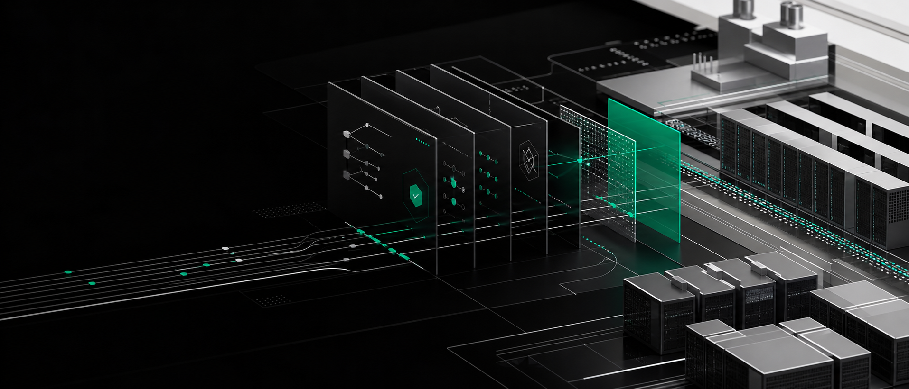
读者，早。
这对中国创作者和中小团队更残酷也更清楚。便宜模型会继续出现，真正卡脖子的会是流程权限、数据边界、事故追责和算力账单。能把这些东西提前做成小控制台的人，比只会追新模型名的人更接近现金流。
OpenAI 在 7 月 22 日推出 Presence，定位不是新的聊天入口，而是把 AI Agent 部署进客户支持、销售、理赔和内部 IT 等工作流。它支持语音和聊天，客户可以定义知识范围、系统权限、审批条件、升级规则和人工接管。OpenAI 称自己的英文电话支持已用 Presence 处理开放式请求，75% 入站问题无需人工解决，并通过 Codex 驱动的改进流程在 10 天内把人工转接减少 15 个百分点。该产品目前面向合格企业客户 limited general availability，不是自助购买。
TechCrunch 7 月 22 日援引《华尔街日报》报道称，OpenAI 计划到 2030 年在基础设施上投入 7500 亿美元，较今年早些时候的估算高约 25%。首个项目是佐治亚州 Project Camellia，规划占地 1400 英亩，位于 Savannah 西北，将从 Georgia Power 获取至少 3.2GW 电力，预计 2028 到 2032 年逐步到位。OpenAI 表示会承担相关基础设施和供电服务成本。

TechCrunch 7 月 22 日报道称，美国财政部长 Scott Bessent 在 X 上表示，对中国 AI 公司采取制裁仍在选项中，背景是白宫官员指称 Moonshot 不当蒸馏 Anthropic 的 Fable 模型。报道同时解释，model distillation 本身是常见训练技术，可能侵犯知识产权，也可能是合法优化方式；Moonshot 相关争议目前仍是政治与商业指控交织，尚未等于司法定论。
Microsoft Canada 7 月 22 日宣布，与 Manulife 扩大五年合作。Manulife 将采用 Microsoft Frontier Suite，并部署 Microsoft Agent 365 来治理、监控和保护企业级 AI Agent，同时把 Microsoft 365 Copilot 扩展到 3 万多名员工。官方通稿把重点放在规模化创新、AI governance 与 security，而不是单个聊天功能。

OpenAI 新闻页显示，7 月 22 日发布了“新闻机构如何用 AI 推进核心使命”的公司文章，集中展示媒体组织使用 AI 的案例。它和同日 Presence 的叙事方向一致：OpenAI 不只展示模型能力，而是把 AI 放进具体行业工作流里讲采用、责任和组织价值。
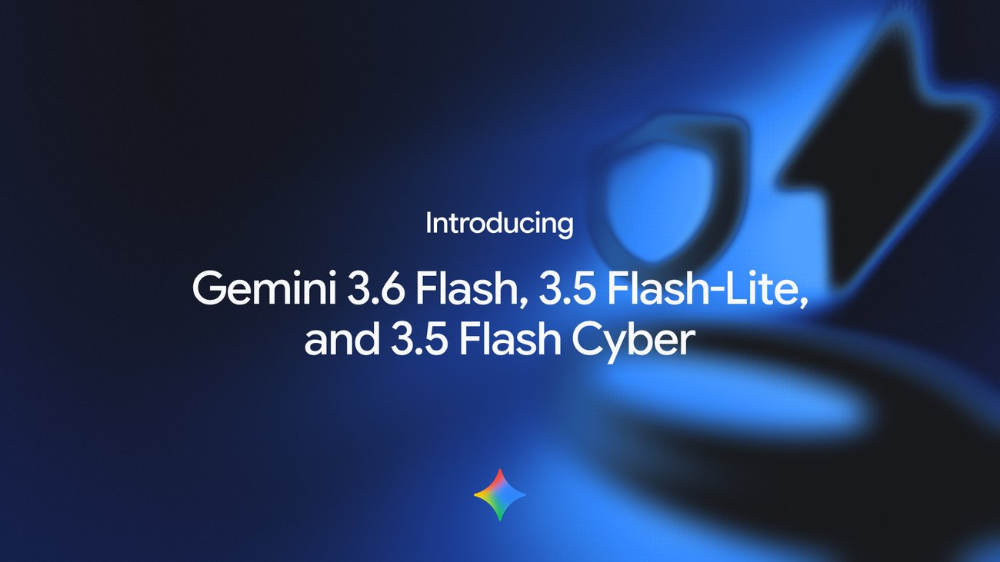
Google 7 月 21 日发布 Gemini 3.6 Flash、3.5 Flash-Lite 和 3.5 Flash Cyber。官方称 3.6 Flash 面向生产级 Agent，在 Artificial Analysis Index 上相比 3.5 Flash 减少 17% 输出 token，价格为每百万 input tokens 1.50 美元、output tokens 7.50 美元；3.5 Flash-Lite 主打高吞吐，输出速度达 350 tokens/s，价格为每百万 input tokens 0.30 美元、output tokens 2.50 美元。3.5 Flash Cyber 将与 CodeMender 结合，先给政府和 trusted partners 做 limited-access pilot。
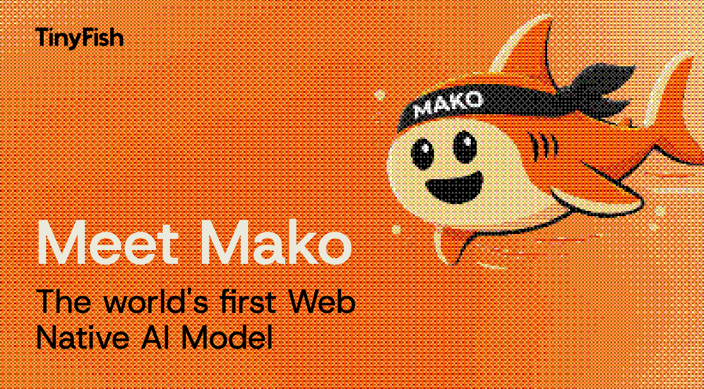
TinyFish 7 月 22 日通过 GlobeNewswire 宣布 Mako，称其为 web-native AI model，训练目标是操作 live web。通稿称 Mako 来自企业生产环境中的认证多步骤网页任务数据，面向需要在真实网页应用里执行流程的 Agent 场景，而不是只在静态浏览器 benchmark 里做点击演示。
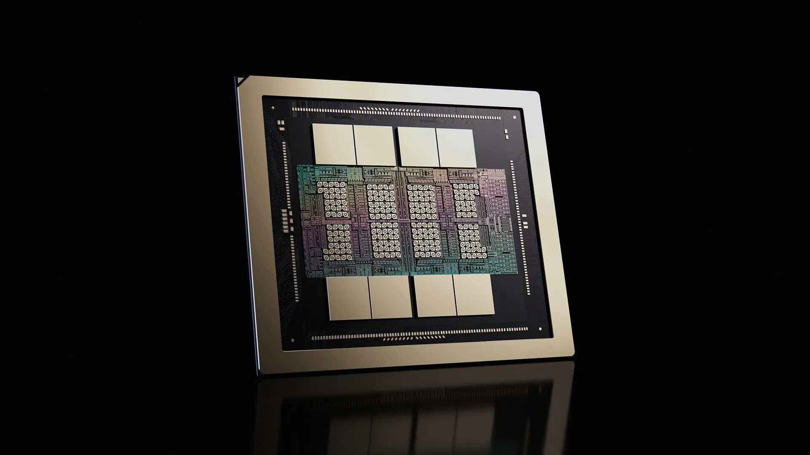
NVIDIA Developer Blog 7 月 21 日详解 Rubin GPU 架构，称 Rubin 是 Vera Rubin 平台核心，面向长上下文、多步推理和 Agent 工作负载。官方摘要给出的关键指标包括 3360 亿晶体管、224 个 SM、896 个 Tensor Cores、288GB HBM4 与 22TB/s 带宽，并称相对 Blackwell 可提供最高 10 倍 agentic throughput per unit energy。Vera Rubin NVL72 还结合液冷、功率平滑和 cable-free MGX 架构。
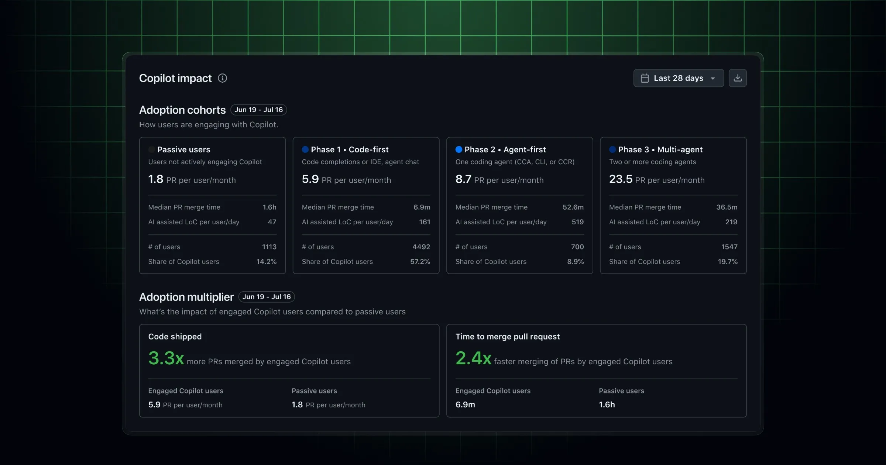
GitHub Changelog 7 月 22 日发布 Copilot metrics impact dashboard，面向企业管理员和组织 owner。新面板按 AI adoption phase 把用户分为 Code-first、Agent-first、Multi-agent 或 Copilot app，以及 licensed but not engaged 的 Passive 组，并展示每用户每月合并 PR、PR merge velocity、用户占比、每日平均代码行数和六个月趋势，还提供推动用户进入更深采用阶段的建议。
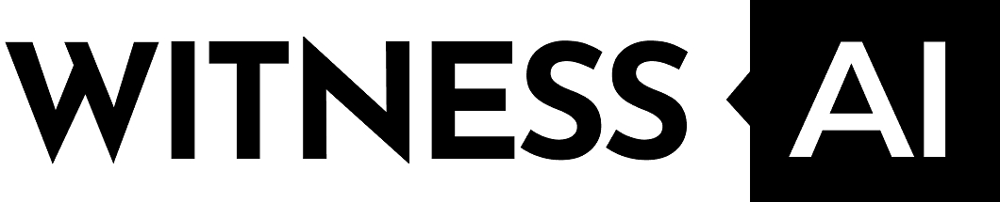
WitnessAI 7 月 22 日发布企业 AI 采用风险报告。通稿称，在受访的企业 VP 到 C-level 决策者中，91% 担心 AI Agent 增加财务风险暴露，但 64% 仍认为 agentic AI 的价值超过风险；86% 在过去 12 个月调查过一个或多个 AI 相关安全或运营事件；21% 表示单次最严重 AI 相关事件成本达到 100 万美元或以上，43% 表示全年 AI 相关事件成本达到 200 万美元或以上。
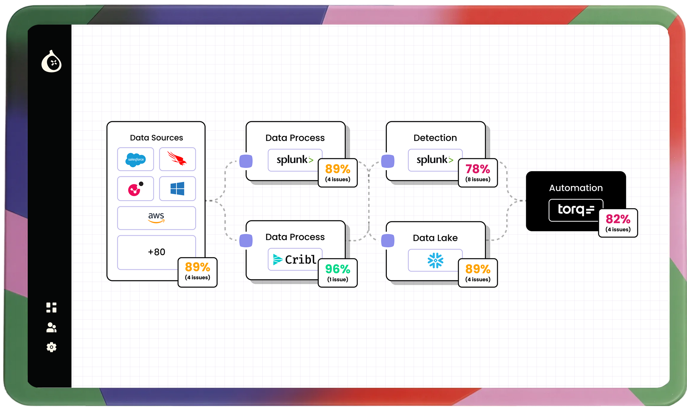
SiliconANGLE 7 月 21 日报道，Fig 推出 Figaro AI Agent，把安全运营改动带进类似软件开发的 CI/CD 流程。工程师用自然语言描述检测变更，Agent 读取 live environment，基于 security data lineage 提出改动，再模拟和测试影响，最后一键部署并可回滚。Fig 称 AppLovin 等早期用户把检测改动从数周压到数分钟。
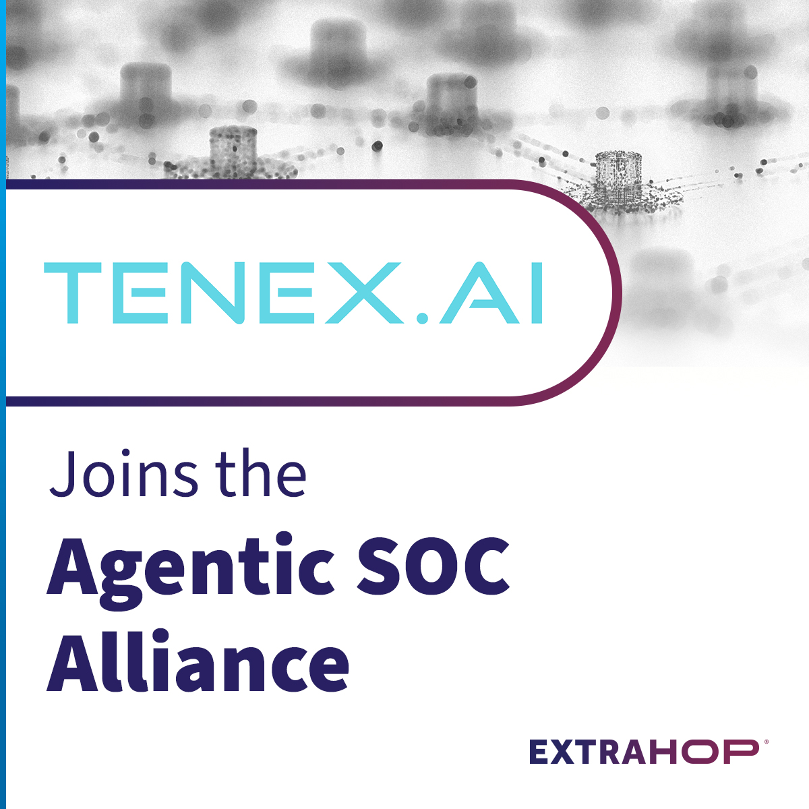
ExtraHop 7 月 22 日宣布 Agentic SOC Alliance，目标是验证面向 machine-speed defense 的新安全运营模型。联盟强调 Context、Harness 和 Model 三层，并要求每个 Agent 都能查询和推理语义丰富的上下文。创始成员包括 AuthMind、Armadin、Command Zero、CrowdStrike、Dropzone AI、Exaforce、ExtraHop、Fig、Intezer、Kindo、LangChain、Prophet Security、ReversingLabs、TENEX.AI 和 Torq。
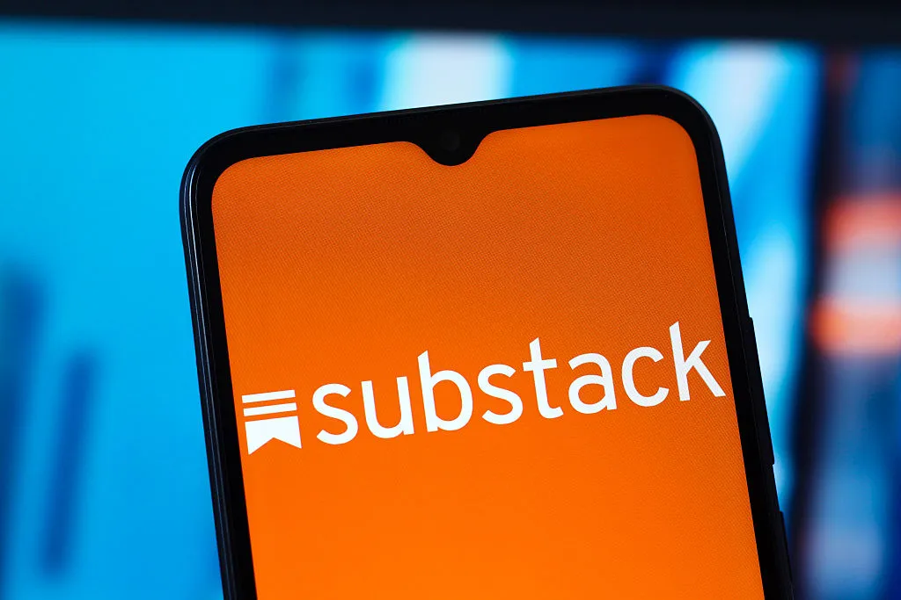
TechCrunch 7 月 22 日报道，Substack 集成 AI 写作检测软件 Pangram，允许用户在 Substack app 内扫描 posts、comments 和 replies，估计内容中人类写作与 AI 写作的比例。报道指出，这可能短期伤害平台业务，因为它会暴露部分 newsletter 并非完全由人写成，但也回应了读者对作者身份和内容透明度的焦虑。
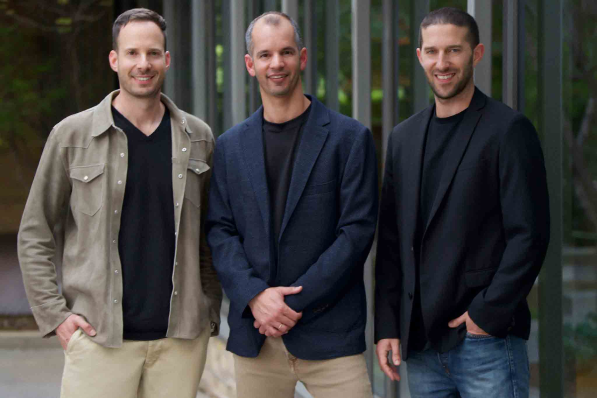
TechCrunch 7 月 22 日报道，Palo Alto 网络安全创业公司 Glow 从 stealth 状态亮相，完成 1.8 亿美元全股权 Series A，估值 12 亿美元。投资方包括 Sequoia Capital、Cyberstarts、Greenoaks、Redpoint Ventures、Index Ventures、Swish Ventures、Lux Capital、Operator Collective 和 Holly Ventures。Glow 由前 Meta 与 Snowflake 高管创立，使用 Anthropic 和 Google Gemini 模型经 Amazon Bedrock 支撑平台，面向 AI 时代的 endpoint security。
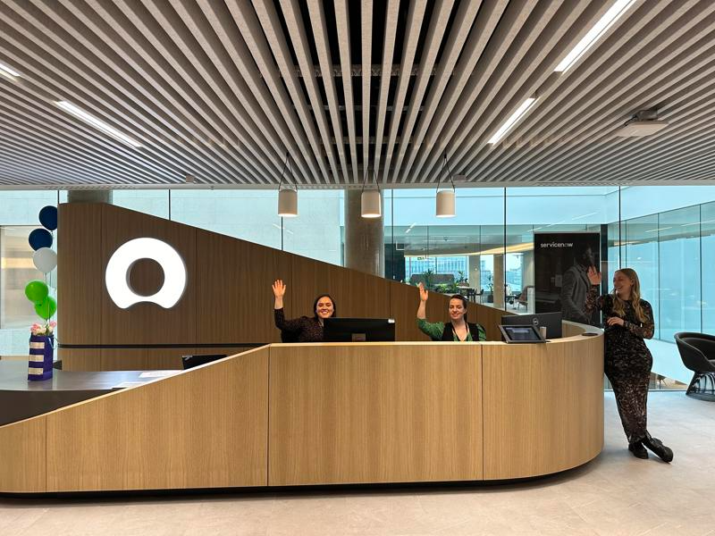
SiliconANGLE 7 月 22 日报道，ServiceNow 第二季度业绩超过预期并上调展望。公司称 AI portfolio 的 annual contract value 已超过 10 亿美元，CEO Bill McDermott 表示 agentic deployments 在过去九个月增长 9 倍。公司季度内完成 123 笔 net new ACV 超 100 万美元的交易，同比增长近 40%，并拥有 658 个年付费超过 500 万美元的客户。
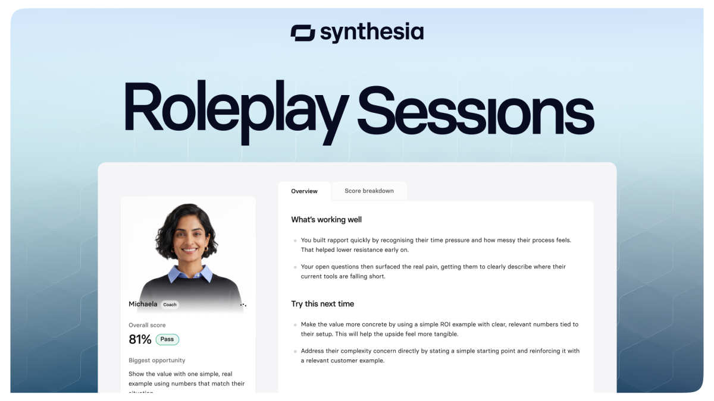
TechCrunch 7 月 22 日报道，Synthesia 推出 Roleplay Sessions，让员工与 AI avatar 练习销售、绩效反馈、客户投诉等高压对话，AI 会反向提问、施压，并按 rubric 评分。该产品是 Synthesia 新产品线的首个发布，意味着公司从“快速生成企业培训视频”扩展到“证明培训是否有效”。
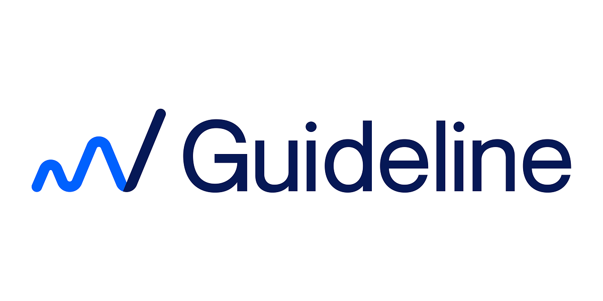
Guideline 7 月 22 日宣布推出 Ad Intelligence MCP Server，让客户用 MCP-compatible AI applications 访问其广告支出、定价和市场情报数据。通稿称支持的配置包括 ChatGPT、Claude、Gemini、Microsoft Copilot 和客户自有 Agent，目标是让广告数据通过标准化接口进入媒体计划和市场分析流程。